3 Instructions (How to CCISS)
3.1 SELECT SITES:
In the first tab of the CCISS tool, users can select points or areas of interest, and make manual adjustments to model parameters if necessary. For a very quick summary of functionality of this page, users can also click the What does this page do link at the top of the left-hand panel.
3.1.1 Step 1. Select points or areas of interest:
Users can select points or areas of interest using one of the following three methods:
Option 1. Click on the biogeoclimatic (BGC) map to add one or more individual locations. Use this option if you have specific sites you are interested in or are exploring CCISS results. Where multiple sites are selected, the user can choose to generate a report where points are averaged within a BGC unit (default) or for each individual site.
Option 2. Click on the map to choose an entire BGC unit or a BGC unit within a single Forest District. The CCISS tool will use a set of pre-selected random points for the units chosen. This option is to be used where general trends are desired by area. The BGC + District option is probably most appropriate for stocking standard revisions. To find a specific BGC unit, users can use the Find-a-BEC drop-down menu at the bottom of the left-hand panel. This will highlight the selected unit in yellow, with a red border.
Option 3. Select a formatted CSV file to upload user-specified and named points. The batch file must be in comma-separated (.csv) text format specifying a short sitename, latitude, longitude, and (optionally) site series (formatted like ICHmc2/01a with no spaces) for each site. Batch files of up to 4000 points are supported and run at about 20 points/second.
3.1.2 Step 2. (Optional) Select report by individual point or BGC unit average.
Users have the option of selecting to view the CCISS report either by individual points, or to average across all points in the same BGC unit. Step 1’s Option 1 and Option 3 default to individual reports for each point, while Option 2 defaults to a BGC unit averaged report. To change this, users can toggle the slider underneath the big blue Generate results button from Report by individual sites to Report averaged by BGC.
3.1.3 Step 3. (Optional) Adjust session parameters
Users can adjust session parameters by clicking on the grey Model parameters button underneath the red Clear selections button. A dialog box appears, with options that allow users to view and adjust the default settings of the CCISS tool. Users are encouraged to read the relevant sections of the CCISS tool documentation prior to changing the default settings. A brief description is also given below.
3.1.4 Step 4. Generate results
Click the big blue Generate results button on the left side of the screen to complete the analysis for the points of interest. If additional points are added or changes are made to parameters, the Generate results button will change to Refresh results to regenerate the output.
3.2 More information on adjusting session parameters:
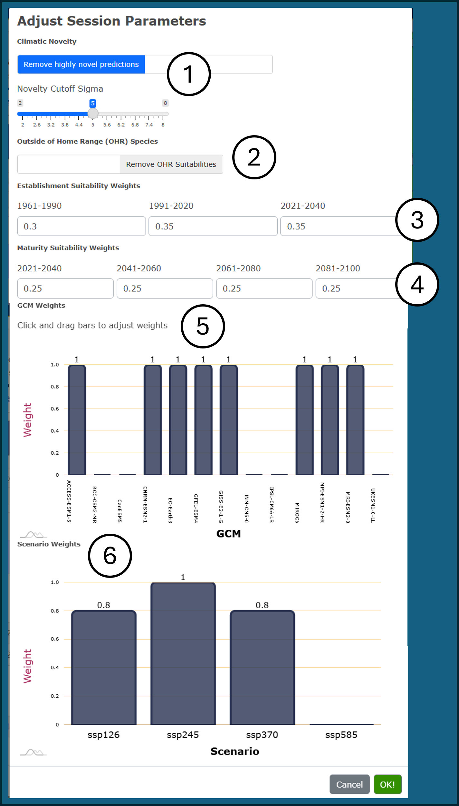
Figure 1: Example of the dialog box for adjusting Model parameters. Steps 1-6 correspond with the documentation below the figure.
3.2.1 1. Climatic novelty
Climatic novelty refers to the degree of mismatch between a future climate condition and the biogeoclimatic analog it is classified as. Valid inferences of species suitability are not possible in highly novel climates. By default, biogeoclimatic projections with high (5\(\sigma\)) novelty are removed from CCISS results and replaced with a black bar in the detailed suitability results. Using the Model parameters dialog box, users can disable the removal of novel climates and adjust the 5\(\sigma\) threshold. For more information, see Documentation - Methods - Novel Climates.
3.2.2 2. Outside of Home Range (OHR) suitabilities
CCISS includes environmental suitability ratings for Douglas-fir and western larch in biogeoclimatic subzone-variants where there is strong evidence that they were suitable for the baseline 1961-1990 climate despite not occurring there naturally due to migration lag. Using the Model parameters dialog box, users can disable the inclusion of OHR suitabilities. See Documentation - Methods - OHR.
3.2.3 3. Establishment suitability weights
The suitability report provides an assessment of establishment suitability, representing the likelihood of success in establishing the species to free growing if planted in the present climate. The default setting almost equally weights the environmental suitability (expert derived) in the baseline 1961-1990 climate, and the model predicted environmental suitability from the observed 2001-2020 climate, and the projected 2021-2040 climate, with a slight weighting towards the two most recent time periods. Using the Model parameters dialog box, users can manually adjust these default weightings to suit their needs. See Documentation - Methods - Rule Sets.
3.2.4 4. Maturation suitability weights
The suitability report provides an assessment of maturation suitability: the suitability of the species through the entire future period to rotation (2021 to 2100). The default setting equally weights the four 20-year future time periods. Using the Model parameters dialog box, users can manually adjust these default weightings. See Documentation - Methods - Rule Sets.
3.2.5 5. Global Climate Model (GCM) weights
There are 13 GCMs available in the CCISS tool. However, the CCISS tool defaults to the 8-model ensemble of GCMs recommended by Mahony et al. (2022) and assigns each of these models equal weighting. The other five models were excluded because their warming rates are not supported by observational evidence (CanESM5, UKESM1, INM-CM5; explained here, because they only have a single run for each scenario (BCC-CSM2, INM-CM5), or because they exhibit unrealistic localized warming in BC (IPSL-CM6A). Using the Model parameters dialog box, users can adjust which GCMs are used and their respective weightings. See Documentation - Methods - Climate Change Projections.
3.2.6 6. Scenario weights
Global climate model projections follow scenarios of future greenhouse gas emissions called Shared Socioeconomic Pathways (SSPs). The CCISS tool provides the option of giving different weights to the four major SSP scenarios: SSP1-2.6, SSP2-4.5, SSP3-7.0, and SSP5-8.5. Collectively, SSP1-2.6, SSP2-4.5, and SSP3-7.0 provide a reasonable representation of optimistic, neutral, and pessimistic outlooks on global emissions policies and socioeconomic development. The CCISS tool defaults to equal weighting of these three scenarios to represent scenario uncertainty in climate change projections. We have set SSP5-8.5 weighting to 0 in the default scenarios because it is extremely unlikely based on current trends in energy economics and policy (Hausfather and Peters 2020). Users can adjust these weightings using the Model parameters dialog box. See Documentation - Methods - Climate Change Projections.
3.2.7 Example: ICHdw1
In this example, the user has manually selected five points of interest in the ICHdw1 BGC unit in the Slocan Valley using Option 1 outlined in Step 1 above. Using the default model parameters and default settings for reporting, the user will obtain a separate result for each of the five selected points.
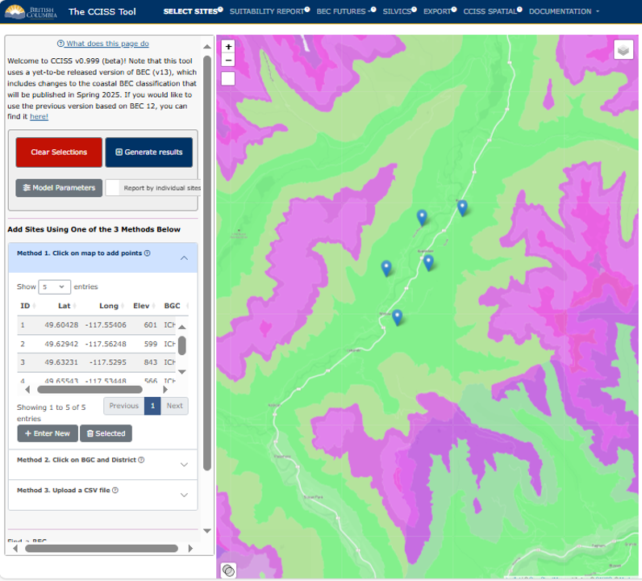
Figure 2: First panel of CCISS tool with five points selected in the ICHdw1 BGC unit.
3.3 SUITABILITY REPORT
In this second tab, users can access the main report of the CCISS tool. The default output is the Detailed report, which shows the distribution of suitability ratings for the global climate model (GCM) ensemble in each time period. The Summary provides a comparison of the Chief Forester’s Reference Guide (CFRG) species ecological suitability and the CCISS environmental suitability projections. Users can toggle back and forth between the Summary and Detailed version using the slider on the left-hand side of the screen, under Report Type (more detail below).
The concept and definitions of environmental suitability ratings and their relationship to stocking standards (according to the CFRG) and CCISS model projections are discussed in more detail in the Suitability Ratings section of the Methods documentation.
3.3.1 Selection/Filter pane
In the left pane, users can select the point or BGC subzone-variant and then the site series of interest. The edatopic space of the selected site series is displayed in the graphic below for reference (see example in Figure 1 and 2 below). By default the report will show all species that are predicted to be suitable in at least one model and time period. Users have the option to choose the Suitable Only option to limit the list to species that meet the threshold for classification as suitable across the GCM ensemble in any of the time periods. Users can also opt to include outside home range (OHR) species here. For more information on OHR species, visit Documentation - Methods - Outside Home Range.
3.3.2 Detailed report
The Detailed report shows modelled suitability ratios for each species in the selected site series for each time period. The colour legend for suitability ratings is on the left hand pane. The mapped BGC unit represents the historic climate approximated by the climatic conditions of the 1961-1990 period. The recent time period (2001-2020) has two bars: one for the observed climate (measured by weather stations), and one for the climates simulated by the ensemble of GCMs. These two bars are not necessarily expected to agree: the modelled climates sample a large range of possible recent conditions, of which the observed recent climate is only one.
The report then summarizes the historical suitability ratings and CCISS projected suitability ratings for each species in the following order:
The CFRG suitability rating: Ecological suitability ratings for a timber objective taken from the Chief Forester’s Reference Guide for Stocking Standards (CFRG)
The CFRG P/A value: Preferred/Acceptable ratings taken directly from the CFRG
The Historical Environmental Suitability: Expert derived baseline (1961-1990) environmental suitability rating for site series.
CCISS Establishment Suitability: The weighted average suitability rating based on the historical environmental suitability (1961-1990), and CCISS projected suitability based on recent observed (2001-2020), and 2021-2040 future projected climates. This indicates the likely level of constraints for successful establishment of the species in the present climate. Default model settings give roughly equal weight to the three time periods, with slightly more weight to the recent (2001+) periods.
CCISS Maturation Suitability: The weighted average suitability rating projected across the four 20-year normal periods (2021-2100). This indicates the inferred suitability of successfully growing an established species to maturity (80 years). Default model settings equally weight all time periods.
Trend: The proportion of the GCM simulations indicating improving/stable suitability (numerator) vs. declining suitability or remaining unsuitable.
Reminder: The weights used to calculate Establishment Suitability and Maturation Suitability can be modified using the “Adjust Parameters” dialog box in the “Select Sites” tab.
3.3.2.1 Novel climates
Climatic novelty refers to the difference between future climate condition and the climate condition of the closest biogeoclimatic analog. Where future climates are highly novel, i.e. there is substantial difference between the future climate condition and the closest analog, there is much higher uncertainty around species suitability projections. By default, biogeoclimatic projections with high (5\(\sigma\)) novelty are removed from CCISS results and replaced with a black bar in the detailed suitability results. Removal of novel climates can be disabled or adjusted using the “Adjust Parameters” dialog box in the “Select Sites” tab. If novel climates are not removed, the CCISS tool makes the assumption that all future analogs are equal, despite the novel climates potentially not being good analogs. See Documentation - Methods - Novel Climates for more details.
3.3.3 Summary report
This report compares CCISS projected suitability at maturity with the Chief Forester’s Reference Guide ecological suitability. Species codes are coloured according to trends in their future suitability using the legend at the bottom of the selection pane: improving (green), or decreasing (red). Species added to the CCISS projected stocking standard* are coloured purple, and species dropped from the CCISS projected stocking standard are strike-through.
*Note: These are not formally adopted stocking standards by BC Ministry of Forests.
3.3.4 Example: ICHdw1 cont.
The following example continues using the five points selected previously in the SELECT SITES Instructions panel of the CCISS tool. Figure 1 shows the top few lines of the Detailed report, when the default Remove highly novel climates is selected through the dialog box accessed via the Model Parameters button, while Figure 2 shows how this report changes when No Novelty Analysis is selected instead.
Figure 1: Example of a Detailed suitability report for the 101 - CwFd-Prince’s pine - Twinflower site series of the ICHdw1 biogeoclimatic subzone-variant in the Slocan Valley, with the option Remove highly novel climates selected in dialog box accessed through the Model parameters button.
The Detailed report (Figure 1) is displaying the results for the 1st point (1 / 6530760). The seven-digit number here simply refers to the hex cell that the point is located in. In this example, we have selected the ICHdw1/101 CwFd - Prince’s pine - Twinflower site series. We can see from the bars under Modelled Suitability that for Fd (Douglas-fir), the mapped (historic: 1961-1990) suitability was E1: High (Documentation - Methods - Suitability Ratings). Accordingly, the CFRG rates Fd 1 for Primary and P for Preferred at this site. The CCISS tool projections resulted in an E1 rating at Establishment, and an E2 (moderate) at Maturity. The modelled suitability ratios Trend shows that 87 percent of model “votes” suggested that the suitability of Fd would either improve or stay the same, and 13 percent suggested a decline in suitability.
If we return to the bar chart, under the “Mapped” bar, we see the two bars that represent the recent time period (2001-2020). From this, we can see that the weather station data (obs) and the climates simulated by the ensemble of GCMs (mod) are in agreement that Fd has been a highly suitable (E1) species at this location.
The CCISS tool then allows us to evaluate the future projected environmental suitability of the tree species. We see that in the first of the future periods (2021-2040), there is not much change in the suitability of Fd. However, in the next three future periods (2041-2060, 2061-2080, and 2081-2100), we can see the introduction of novel climates. These are climates for which there is no good analog in the pool of Western North America historical climates. See Documentation - Methods - Novel Climates for more information. Since the climate in this region is projected to be distinct from other BGC analogs in Western North America, we do not know how well Douglas-fir will fare in these conditions, which means there is increased uncertainty around future suitability. Overall, the CCISS tool suggests that Fd will remain suitable to future climate at this location, with some caution around unknown suitability under novel future climate.
The next species on the list is Lw (western larch). The outlook for this species is more unfavourable than for Fd. As can be seen by the green E1 bar for “Mapped”, Lw was highly suitable under historical environmental conditions in this BGC unit, and rated primary (1) by the CFRG. However, the two bars for the recent period (2001-2020) demonstrate decreasing suitability to E2. CCISS projections suggest that as early as the current (2021-2040) time period, this suitability will drop to an E3. By the end of the century, only 17% of models suggest an E3 rating for this species, with 31% predicting unsuitable, and the rest falling into a novel climate where we do not know how Lw will respond. This information suggests that Lw is a highly risky species to plant in the ICHdw1/101.
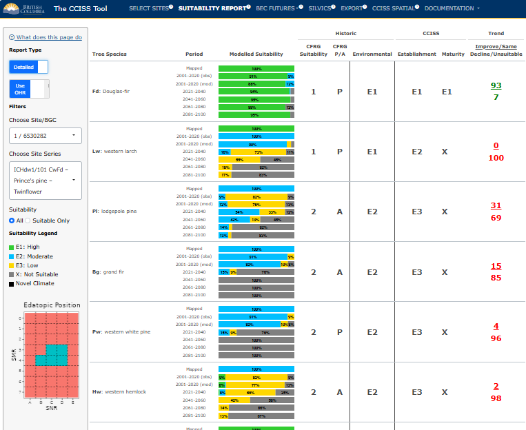
Figure 2: Example of a Detailed suitability report for the 101 - CwFd-Prince’s pine - Twinflower site series of the ICHdw1 biogeoclimatic subzone-variant in the Slocan Valley, with the option No Novelty Analysis selected in dialog box accessed through the Model parameters button.
In Figure 2, we see the impact that selecting “No Novelty Analysis” has on our results. In this scenario, the CCISS tool does not remove highly novel predictions, instead displaying all BGC projections including those that may not be good analogs. As a result, the CCISS gives us a more confident answer about the suitability of Fd, suggesting that its suitability until 2100 will remain fairly stable. In this example, the projected BGCs associated with novel climate contain an Fd species suitability rating of E1. Therefore, it promotes the Maturity Suitability to an E1, whereas in Figure 1, we see that it was demoted to an E2 due to the greater proportion of unsuitable (X) ratings in relation to suitable (E1) ratings. In Figure 2, the modelled suitability ratios show that 92 percent of model “votes” suggested that the suitability of Fd would either improve or stay the same, and 8 percent suggested a decline in suitability. Removing highly novel predictions represents a more conservative or cautious approach.
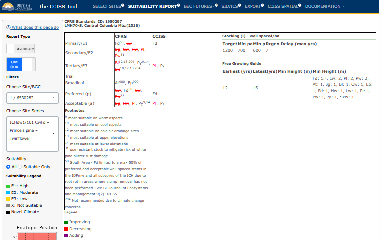
Figure 3: Example of a suitability Summary report for ICHdw1/101, which shows the difference between the CCISS projected environmental suitabilities and the original ecological suitability proposed by the Chief Forester’s Reference Guide.
Finally, we see an example of a Summary report (Figure 3). This feature allows the user to explicitly compare CCISS results with those of the CFRG. The species shown in red text are decreasing in suitability. Those that are crossed out have, on average, across all time periods, GCMs, and SSPs, decreased so much that they are now predicted to be unsuitable. Species marked in green are improving in suitability, but none of those exist in the current example. Finally, if the user was to switch to No Novelty Analysis in the Select Sites tab, under Model Parameters, they would see some species show up here in purple (Adding). Purple species are those that were not included in the CFRG because they were historically unsuitable here, but CCISS predicts future climates in which they could be suitable.
In this case, we see that only two species remain suitable according to the CCISS projections Fd (E2) and Py (E3). Py (Ponderosa pine) is another interesting example, because the displayed projections (i.e. not novel climate) predict a divergence in suitability (E1, E3 and unsuitable), tending towards an increase in suitability over time and averaging to an E3 rating (Figure 4). This species has 80 percent of model “votes” suggesting increasing/maintained suitability, and only 20 percent suggest a decrease. However, much of the future climate is novel and there is a high degree of uncertainty around the future suitability of Py.
Note on footnotes: Py has footnote 9 in the CFRG, which corresponds to most suitable on warm aspects. This is where applying expert knowledge to CCISS results is key, because under warmer future climate, it might actually be more suitable on cooler aspects instead.
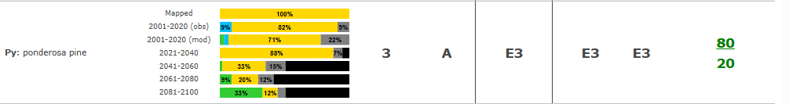
Figure 4: Suitability report for Ponderosa pine (Py) in this example scenario for ICHdw1/101.
3.3.4.0.1 References:
3.4 BEC FUTURES:
This section summarizes the biogeoclimatic (BGC) projections that underlie the species suitability forecasts. Biogeoclimatic subzone/variants (a.k.a. BGC units) are the climate component of the Biogeoclimatic Ecosystem Classification (BEC). Each user-selected location has a mapped BGC unit representing its historical climate. Biogeoclimatic projections identify a BGC unit whose historical climate is the best match (best analog) for the future climate at a user-selected location. In other words, changes in climatic conditions (temperature, precipitation, etc) are translated into a change in the BGC unit.
3.4.1 Chart
Users can view the chart mode, which displays a stacked bar chart showing the ratio of future BGC analogs by time period predicted across a range of global climate model-scenario climate projections. Hovering over a stacked bar will display these proportions numerically.
The recent time period (2001-2020) has two bars: one for the observed climate (measured by weather stations and interpolated across the province), and one for the modelled climates (simulated by global climate models). These two aren’t expected to agree: the modelled climates sample a large range of possible recent conditions, of which the observed recent climate is only one.
The default mode of this plot simply shows the BGC analog labels. Users can specify a site series of interest and select “Site Series Overlap” on the lefthand pane, which will display the site series in the BGC analog that overlap with the edatopic position of the historic site series, along with the proportion of the edatopic overlap. The “minimum site series overlap” slider allows the user to include or exclude site series with small edatopic overlaps.
3.4.2 Map
After switching to the Map tab in the drop-down menu under BEC Futures, users can select the site or area of interest from the drop down menu and then select a future time period. The map will highlight the historical BGC unit in colour (pink) and the projected BGC analogs in grey. Darker greys indicate a higher proportion of global climate model projections matched that BGC analog.
3.4.3 Example: ICHdw1 cont.
Continuing on with the example of the ICHdw1 - Interior Cedar-Hemlock - West Kootenay Dry Warm, in the Slocan Valley, we can see the projected BGC units that inform changes to species suitability (See Suitability Report tab), displayed as stacked bar charts by selecting Charts.
Note: See Documentation - Definitions - BEC Codes for the biogeoclimatic zone and subzone names.
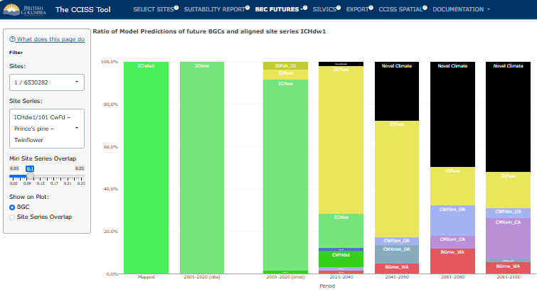
Figure 1: Stacked bar chart showing the mapped (historic) BGC unit, the BGC unit(s) associated with observed/modelled (2001-2020) climate, as well as the ratio of future BGC climate analogs predicted by CCISS. This version of the chart was created with the default setting for climate novelty in the Select Sites tab (Remove highly novel climates).
We can see that the future climate of the ICHdw1 in the Slocan Valley is predicted to much more closely resemble climates historically found in Washington, Oregon, and California. In the recent period’s modelled results, most ‘votes’ agree with the observed weather data that the climate most closely resembled that of ICHxw (Interior Cedar-Hemlock very dry warm) between 2001 and 2020. In the 2021-2040 time period, the IDFww (Interior Douglas-fir wet warm) becomes the dominant climate analog, and novel climates begin to appear. By the 2081-2100 period, the CMXxm_CA (Coastal Mixed Evergreen very dry mild California) becomes the BGC unit with the most votes. The historical analog for this climate is found in the foothills of the Sierra Nevada mountains in California (Figure 3), and it is much warmer than the historical climate in the Kootenays.
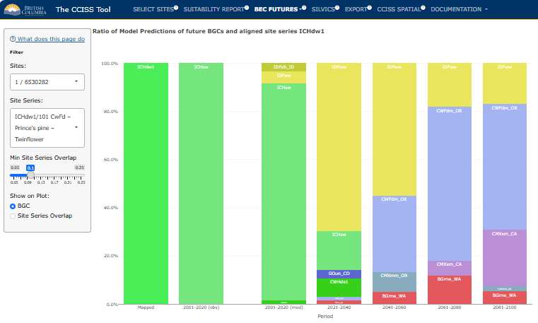
Figure 2: Stacked bar chart showing the mapped (historic) BGC unit, the BGC unit(s) associated with observed/modelled (2001-2020) climate, as well as the ratio of future BGC climate analogs predicted by CCISS. This version of the chart was created by changing the setting for climate novelty in the Select Sites tab to No Novelty Analysis.
When we ignore climate novelty and consider all analogs as equal, we see quite a different future, with a dominance of the CWFdm_OR (Coastal White Fir dry mild Oregon) in the 2041-2060, 2061-2080, and 2081-2100 periods.
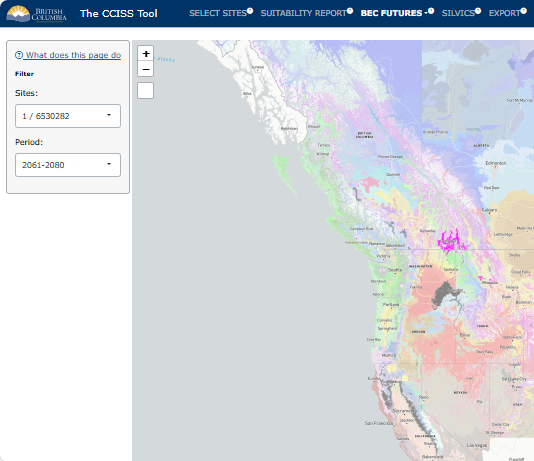
Figure 3: Map highlighting the historical BGC unit - ICHdw1 - in pink, and the future BGC analogs in grey.
Finally, in Figure 3, we see the location of the ICHdw1 in pink and the locations of the projected BGC analogs highlighted in grey.
3.5 SILVICS
This section contains information that may be useful for interpreting CCISS results and making management decisions. More information can be found in the About tab of this section.
This module summarizes the silvics of each species with historic or future suitability in the selected BGC unit and site series. This information is drawn from Klinka et al. (2000). This information can be explored further at this link.
3.5.1 Example: ICHdw1 cont.
Here’s what the output from the Silvics tab would look like given the example in the ICHdw1. The user can select the site series within the BGC subzone/variant, and select whether they want to see the Klinka et al. (2000) information for just suitable species, or for all species.
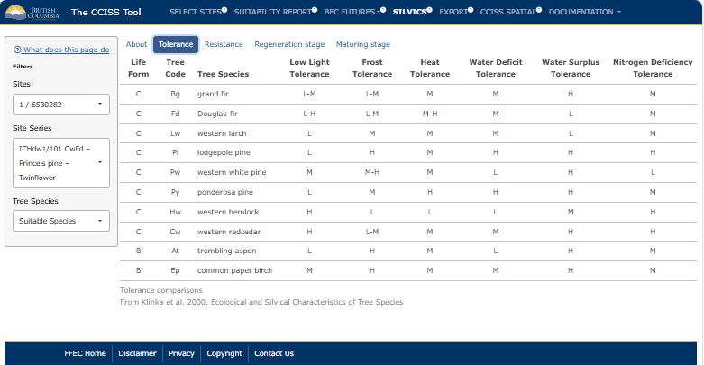
Figure 1: Example of the information provided by Klinka et al. (2000) for tolerance of species in the ICHdw1/101.
3.6 EXPORT
3.6.1 Export Report
The report is designed for documentation and off-line use of a CCISS tool report session, for example, as an appendix to a site plan. We recommend including only the site series of interest to the user. Choose the “Suitable Only” option to limit the list to species that meet the threshold for inclusion as suitable in any of the time periods.
3.6.2 Export data
Suitability data can be exported for conducting further analyses such as calculating summary statistics for your area of interest. Suitability data exported from the CCISS tool is in “long form” with each row showing projected suitability by site of interest, site series, and tree species. Data are exported as a .CSV file; a PDF metadata report is included in the export folder.
3.6.3 Example: ICHdw1 cont.
Continuing with our example in the ICHdw1, here’s what the Export page would look like.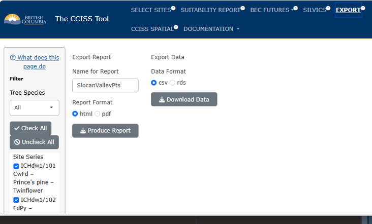
Figure 1: Example of how a user could save data using the Export functionality in CCISS.
3.6.3.1 References:
Klinka, K., J. Worrall, L. Skoda, and P. Varga. 2000. The Distribution and Synopsis of Ecological and Silvical Characteristics of Tree Species of British Columbia’s Forests. Canadian Cartographics Ltd., Coquitlam, B.C.
3.7 CCISS SPATIAL
The spatial module of the CCISS tool allows users to put CCISS results into spatial context and explore CCISS data inputs (i.e. BGC model and species environmental suitability ratings).
Functionality of the CCISS spatial module includes:
- Maps of biogeoclimatic projections for the GCM ensemble and for five representative GCM simulations;
- Maps of tree species environmental suitability projections for three site types (i.e., edatopes);
- Overlays of climatic novelty for each biogeoclimatic or suitability projection;
- Pop-up interactive plots on user-selected locations ;
- Interactive plots of biogeoclimatic and suitability changes within user-selected subregions;
- Downloads of spatial data for active map layer at 200m raster resolution; and
- Find-A-BEC for locating specified biogeoclimatic units of Western North America.
3.7.1 Subregion type
The options for Subregion type are None, District - BC Natural Resource Districts, and FLP Area - Forest Landscape Planning (FLP) areas. We currently provide functionality for 10 FLP areas; we will add more as they become publicly available. When a subregion is clicked on the map, an interactive plot appears to the right of the map. The plot shows ensemble mean change in biogeoclimatic unit area or species suitability; variation by GCM can be viewed by clicking the lines on the map.
3.7.2 Display BGC or Suitability
Select whether the map displays biogeoclimatic (BGC) units or species suitability. Subsequent dialogue boxes are customized for each of these two modes, as described below.
3.7.3 BGC mode
Select reference period (baseline) historical climate, observed recent climate (2001-2020), or future climates.
When
Reference (1961-1990)is selected, there is the option of selecting betweenMapped or Predictedview. TheMappedBGC units are a rasterization of the official linework of BEC version 13.Modelledrepresents the BGC unit predicted by the biogeoclimatic model used to generate the CCISS projections. The model is trained with a sample of locations from each biogeoclimatic unit, and is not expected to perfectly reproduce the official linework.When
Observed (2001-2020)is selected, this displays the BGC units selected by the BGC model associated with the observed (recorded) climate of 2001-2020. This time period already reflects a slight shift in the climate associated with each BGC relative to the 1961-1990 reference period and therefore the BGC climate analog selected by the model.When
Future (GCMs)is selected,Select GCMcontrols whether the map shows ensemble results or individual GCM simulations.SZ_Ensembledisplays the biogeoclimatic subzone/variant with the highest number of votes across the ensemble of 60 simulations (i.e., the ensemble vote winner);Zone_Ensembleshows the biogeoclimatic zone with the most votes. These may be different because votes for the highest-voted subzone variant may be outnumbered by votes for multiple subzone/variants from another biogeoclimatic zone. To see what the breakdown of votes was for any given location, users can click on the map, and a pop-up will appear with stacked bars showing the percent of votes for each BGC unit in each time period. For more information, see the example at the bottom of this page.Select periodallows the user to select a time period between 2001 and 2100, split in 20-year increments. Here 2001-2020 represents the modeled results of the GCM simulations for that time period (not observed climate records).
Regional summaries can be viewed by selecting District or FLP Area from the left-hand panel, and clicking on the area of interest on the map. A box will appear on the right-hand panel of the screen, where users can adjust the x-variable of interest (time, MAT - Mean Annual Temperature, MAP - Mean Annual Precipitation, CMD - Climatic Moisture Deficit , or DD5 - Growing Degree Days above 5°C). Users can also select whether they want to summarize by zone (or by subzone-variant if un-checked), and if they want to show the 2001-2020 observed period as points on the resulting plot.
3.7.4 Suitability mode
Throughout Suitability mode, there is the option of choosing a representative edatope (site type) and tree species.
Select Edatope (SNR/SMR)represents a Soil Nutrient Regime/Soil Moisture Regime combination. The dropdown provides the option of B2 (nutrient-poor, subxeric), C4 (nutrient-medium, mesic), or D6 (nutrient-rich, hygric). Displaying all 35 edatopes is computationally infeasible, so we chose these three edatopes to represent distinct, common site types.
Select speciesallows for selection among 15 common native BC tree species. Additional species will be added in the future. Codes for each species are defined in Documentation>Definitions>SpeciesCodes.
The mapping of suitability for each time period selected reflects the underlying BGC unit(s) mapped or projected.
When Reference (1961-1990) is selected, this displayed the expert assigned suitability rating for site series that overlap the selected edatope. When Mapped is selected the mapping of BGC units reflects the BEC version 13 linework. When Modelled is selected the mapping reflects the BGC units predicted by the biogeoclimatic model used to generate the CCISS projections. The methods for assigning and definitions of these ratings are defined in Documentation>Methods>SuitabilityRatings.
When Observed (2001-2020) or Future (GCMs) is selected, there is the option of mapping Projected Suitability or Suitability Change.
Projected Suitabilitydisplays the CCISS environmental suitability rating for the selected time period associated with the projected BGC units.Suitability Changedisplays the change in suitability relative to the mapped reference period (1961-1990) suitability rating, increasing (blue), decreasing (red) or no change (grey). Species that are projected to become “newly suitable” in areas where they were historically unsuitable are mapped in yellow to differentiate this suitability range expansion from increases in suitability within the historically suitable range of the species (represented in blue).
3.7.4.1 Suitability pop-up plot
When a location on the suitability map is clicked, a pop-up is activated providing interactive 2D plots of the change in biogeoclimatic analogs and species suitability over time at that location. There may be more than one suitability rating for individual biogeoclimatic units because in some cases the selected edatope is shared by two site series with different suitability ratings (see Documentation>Methods>Edatopic Overlap).
3.7.5 Display Novelty
In BGC or Suitability mode, the Display Novelty? checkbox overlays a map of estimated climatic novelty. High climatic novelty (>5σ, red colors) indicates that the biogeoclimatic subzone/variant identified by the biogeoclimatic model is a very poor analog for the future climate condition, even though it is the best (i.e. closest in climatic space) available. The CCISS tool uses a default dissimilarity threshold of 5-sigma (5σ) to infer a novel climate and exclude the biogeoclimatic analog. Novelty in the 3-5σ range can be interpreted as a poor analog. In this range, species suitability inferences may be useful but are also likely to be somewhat misleading. The methods and interpretation of climatic novelty are explained in Documentation>Methods>Novel Climates.
3.7.5.1 Novelty pop-up plot
When a location on the novelty map is clicked, a pop-up is activated providing an interactive 3D plot comparing future climates to the historical climate of the analog. Click and drag to spin the plot. This plot is the same for all locations that have the same biogeoclimatic analog for the selected GCM and time period. Blue dots are the spatial variation in baseline (1961-1990) climates of the analog. Black dots are the 1951-1990 interannual climatic variability (ICV) of the BGC analog. Filled circles (grey-yellow-red) are projected climates of locations in British Columbia that are assigned the analog by the BGC model, with colours indicating sigma novelty consistent with the map legend. The cross symbol represents the ‘selected location’, the average climate of the projected future/observed time period selected for the location that has been clicked (i.e. individual raster cell). The axes of the plot are principal components (PCs) of analog variation, with PC1 being the axis with the most variation in the plotted points, and PC3 having the least. Labelled lines indicate correlations of the input variables with the 3 PCs that comprise the viewspace.
3.7.6 Hide/Show Layer
This button removes the CCISS layer to reveal the basemap. This is useful for comparing the CCISS maps to the topography, satellite photo, or baseline BGC linework. These basemaps can be selected in the top right-hand corner of the map:
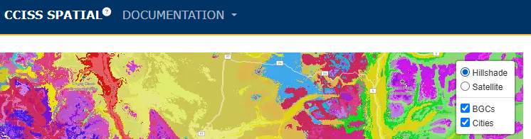
Figure 1: Demonstration of how basemaps can be selected in CCISS spatial.
3.7.7 Find-A-BEC
The Find-A-BEC feature helps with locating specified biogeoclimatic units of Western North America. Select the BGC zone of interest and then use Deselect All to select a subset of subzone/variants within that zone. Applying the Gray non-selected BGCs checkbox assists with finding the selected unit(s).
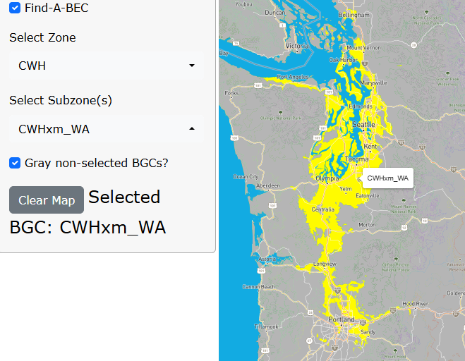
Figure 2: Demonstration of the Find-a-BEC function in CCISS spatial.
3.7.8 Export data from CCISS Spatial:
Data from CCISS Spatial are downloadable as raster files. Users can opt to download data for the whole province by clicking on the gray Download Province button at the bottom of the left-hand panel, or they can select a specific district or FLP area in the same panel. If they select a district or FLP area of interest, a pop up appears on the right-hand side (also where users can view the regional summaries). Here, users can download the raster file of the map they are currently viewing.
3.7.9 Example: ICHdw1 cont.
Throughout the Instructions, we have been following an example of the ICHdw1 in the Slocan Valley of BC. Here, here we see the projected BGC analogs for this area. In Figure 3, we have selected to display BGCs, and are opting to look at the future. We selected the SZ_Ensemble, which represents the ensemble vote winner (i.e., BGC analog with the most votes) in the 2061-2080 time period. When we hover over the area represented by the black dot, we can see the Layer Info box that reads Predicted BGC: CWFdm_OR. When we click on this spot, the BGC Projections pop-up appears, which gives a breakdown of the different BGC units (i.e., subzone/variants) that were predicted by each of the model runs. We can see that indeed, in the 2061-2080 period, the CWFdm_OR - Coastal White Fir dry maritime Oregon - has the most votes, and that it received roughly 50% of votes for that period.

Figure 3: BGC projections - SZ_Ensemble, which displays the biogeoclimatic subzone/variant with the highest number of votes across simulations. At the point of interest (black dot) added here, the ensemble vote winner (i.e., BGC unit with the most “votes”, is CWFdm_OR).
Next, in Figure 4, we have selected Zone_Ensemble from the Select GCM dropdown menu. We can now see the predicted biogeoclimatic zone rather than subzone/variant. This zone is selected by adding up the votes for each zone. We can see that it is the CWF - Coastal White Fir - that has the most votes in the 2061-2080 time period.

Figure 4: BGC projections - ZONE_Ensemble, which displays the biogeoclimatic zone with the highest number of votes across simulations. At the point of interest (black dot) added here, it is the CWF zone.
We can also look at tree species suitability over time, in three different edatopes. In Figure 5, we remain centered on the Slocan Valley of British Columbia. In this example, we have now selected to display Suitability rather than BGC. We selected the C4 edatope, and Fd (Douglas-fir). For a list of species codes, see Documentation>Definitions>Species Codes.
In this map, we are looking at projected suitabilities for the 2061-2080 time period. The green text represents areas with E1, or high suitability, while blue demonstrates areas with E2, or moderate suitability. The yellow areas have low suitability, and white areas are unsuitable for Fd.
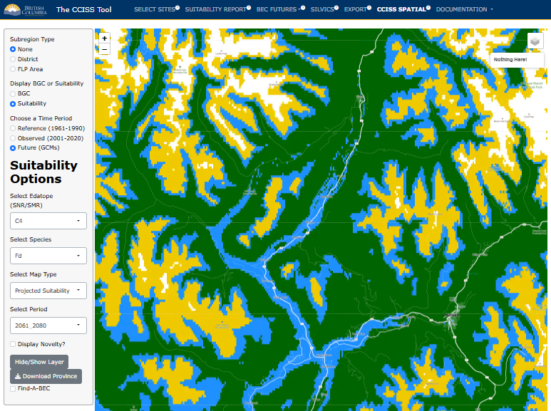
Figure 5: Still centered around the Slocan Valley, this map shows projected future suitabilities for Fd (Douglas-fir) in the 2061-2080 future period. Green is E1: High, blue is E2: Moderate, yellow is E3: Low suitability, and white is unsuitable.
We can also look at suitability in a different way. Rather than viewing the suitability for a species in each time period separately, we can opt to look at the change in suitability over time (selecting Suitability Change). In this map, we see that the suitability ratings for Fd in the C4 edatope in the Slocan Valley are expected to decrease by the 2061-2080s. These areas of decrease are marked with a gradient of shades of red. Meanwhile, higher elevation areas upward from the valley are projected to increase in suitability. Areas where suitability is expected to increase are shown in blue. Finally, areas that are becoming newly suitable are shown in shades of yellow.

Figure 6: Map representing the change in suitability, as compared to the historic period (1961-1990) in the Slocan Valley area.
In this area, the CCISS tool predicts a lot of novel climates (i.e., climates with no good historical analogs). We can see that by clicking on the Display Novelty? checkbox at the bottom of the left-hand panel. This means that there is much uncertainty about how species will respond to changes in climate here, because there are no historical areas within Western North America that have experienced these exact climate conditions.

Figure 7: Degree of climate novelty. Red is very high novelty (>5σ) and represents a very bad analog, yellow is high novelty (3-5σ) and represents a poor analog, and white represents areas without novel climates.